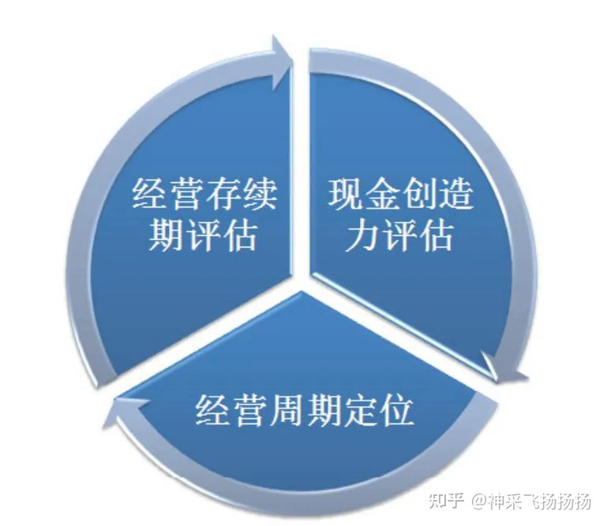
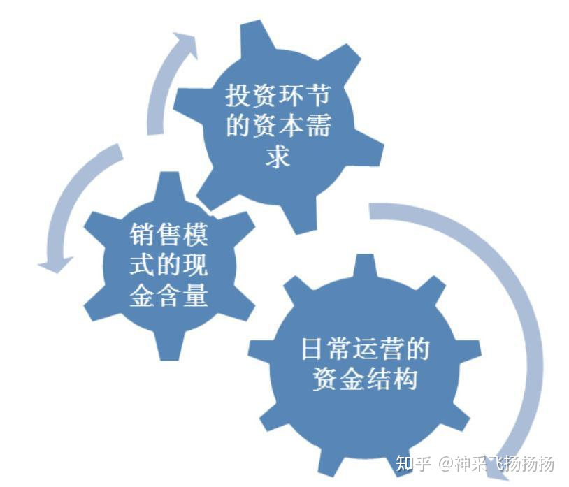
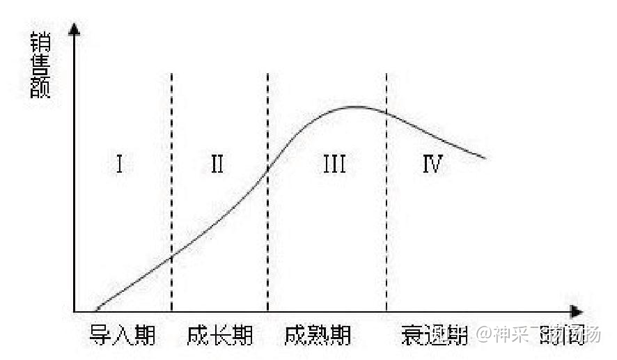
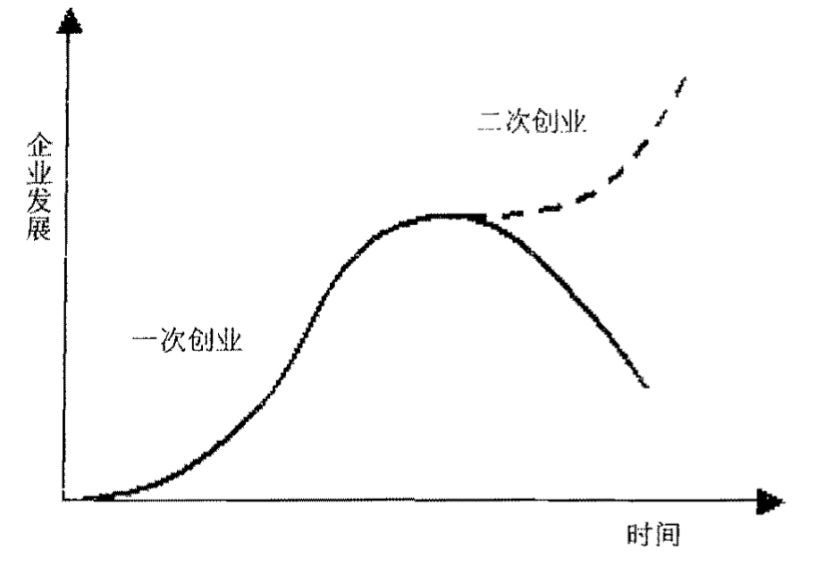
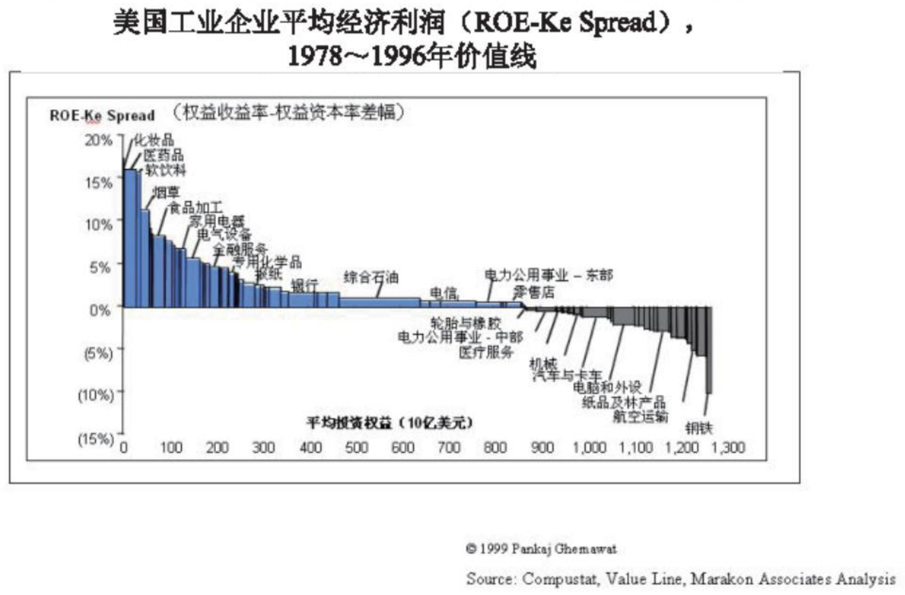

第6章 揭开价值的面纱
当我们说到价值投资的时候，首要的一个问题自然就是：什么才是价值呢？对于价值的认识，不但是践行价值投资的一个基础，也是投资中很多深层次问题的根本源头。比如，当我们要考虑对一个股票枯值的时候，同样会回到“公司到底价值几何”这个原点来。
所以，在发现价值前，让我们先去揭开价值的面纱。
6.1 透视内在价值
在一个价值投资者的投资生涯里，可能要上千次地遇到内在价值这个词。也许是这个词确实过于“内在”了，所以很多时候我们对其有点儿似懂非懂。当然，查一下网络搞懂它在学术上的定义并不困难，但仅靠生硬的学术名词也许并不能对我们的投资有什么帮助。下面，我们将尝试着从多个角度来解读它真正的含义。
6.1.1 不同语境下的价值
提到价值，我们首先要分清楚它在不同语境下的含义。从投资的角度而言，我们经常需要接触的“价值”有三种：内在价值，市场价值（股票市值）和账面价值（净资产）。
1. 账面价值
账面价值（公司的净资产）是最直观但又浅薄的视角，它反映的是一种静态的当前资产净值的会计结果（这一结果并不代表是“真实的”，因为资产的会计计价是历史成本法，这将导致部分资产的现值并不是其真实变现价格的反映——比如过去低价获得的土地物业可能被低估，而设备、库存等资产可能被大幅高估。另外一些诸如交易性金融资产、商誉等资产类别则往往受到股票市场波动和企业经营波动的影响而可能出现较大的重估）。
说它直观是因为它有一笔笔清晰的数字记录在资产负债表中，并且可历史追溯也有会计附录来详细探寻，它毕竟不是一个完全靠估计或者推测得来的结果，并且如果企业不立即发生大的经营变动那么这一结果往往还具有一定的延续性和稳定性。
说它浅薄，是因为净资产本身并不完全反映企业的经营状况。净资产的结构和样貌可以部分体现当前企业经营在财务上的一个阶段性结果，比如现金充裕、资产结构合理、预收款订单充裕、应收账款极少、负债很小等，这确实反映了企业的当期情况比较从容。
但需要注意到，企业的经营是动态的，特别是如果将一个企业经营的整个生命周期都考虑进去的话，那么某一个会计期间的一个静态景象的意义可以忽略不计。不管当时这一数据是如何靓丽或者糟糕，也许这只不过是企业处于不同的行业景气区间中的暂时性反映而已，又或者也许它不过是受到了一些偶然性或一次性的外部环境刺激或者财务事件的影响而已（比如当期正好一个项目的大订单进行了文付获得了回款——导致应收账款大幅下降及银行存款大增；又或者在本会计期间内恰逢牛市，其所持有的大量交易性金融资产的公允价格大幅上升，从而剧烈拉高了净资产总额）。总之，账面价值对于一个企业的评估具有较好的直观性，一定的稳定性，以及过于静态和易被粉饰影响的局限性。
2. 市场价值
市场价值，或者说企业的股票市值，是这个企业在资本市场上得到的定价。作为普通的二级市场投资者而言，我们的主要投资回报都是以市值来兑现的，脱离了市值来谈价值是不切实际的。甚至对于企业家而言，市值的高低，以及市场定价相对于企业账面价值的溢价（PB，市净率）的多少，也是衡量一个企业经营是否成功的重要因素，同时也是企业家个人财富的最主要载体。市值是如此重要，以至于每天在市场中无数的人就是追逐着股价的每一次涨涨跌跌。对于相当多的人而言，进入股票市场的唯一目的就是追逐股价。从市场价值的重要性而言这似乎无可厚非，但也许他们忽略了一点，而且是至关重要的一点：股票市值只是个结果而已，股票价格是股票市场对于企业的一个定价。而这个定价并非是一成不变的，恰恰相反，这个定价的变化之剧烈往往让人瞠目结舌。
所以，只追逐价格本身等于在做一件“重要但是不可能”的事情，因为你搞不懂为什么它会变，它的内在驱动因素在哪里，所以就不可能理解到它的运行规律，而只能被价格牵着鼻子走。这正是股票市场总是让大多数人既感到兴奋刺激最终又沮丧的原因所在。
3.内在价值
市场价值是被什么所决定和牵引的呢？答案是：内在价值。
内在价值与账面价值、市场价值最不同的一点在于，它是看不见、摸不着的。没有任何一个财务报表或者统计数据可以告诉你，某个企业的内在价值是多少。市场价值高的企业内在价值未必高，市场价值低的企业内在价值未必低。因为市场价值是个多动症患者，它总是一刻不停地围绕着内在价值进行着波动。它并不是内在价值的前瞻性指标或者某种暗示，甚至有时候这种市场定价会与企业的真实内在价值产生让人想不明白的偏离度。
6.1.2 职场与现金流折现
那么内在价值到底是什么呢？巴菲特给出了经典的定义：企业在经营的生命周期内所获得的现金流的贴现值。
这听起来是一个让人昏昏欲睡的学术概念。我们不妨借巴菲特曾经用过的一个比喻并稍加修改后来进行一个形象化的理解：假设一个人完成了所有的学业并参加了工作，那么他为了完成这些学业而付出的所有成本就是”账面价值”——包括学费及为了学习所产生的各种杂费等。他的学习成本是用历史计价的也表明了其为了获得今天的职业竞争力所产生的一个资本。而他进入了职场，所获得的工资额就是他的“市场价值”，这是市场化的职场对他所能胜任的工作，以及这份工作的复杂度、创造的价值等各方面的一个综合评估。那么，从参加工作到最终职业生涯结束这一漫长的过程中，他所能获得的所有的职务性现金收入的总和，就是他的”内在价值”。
很显然，这里面比较确定的是账面价值（已经成为历史成本，但也可能在未来的工作中继续进修，以及可能获得新的稀缺的社会认可的头衔，比如教授、职业会计师等，所以其内在价值存在进一步修改的空间）。不太确定的是”市场价值”，因为随着个人能力的增强、专业经验的积累，或者是客户资源、人脉等稀缺资源的拓展，他可能会一步步地从普通职员，到高级职员，到经理，到总监，也可能从一个小公司跳槽到了世界500强，或者是从原来的纺织厂转移到了金融投资领域……
显然每一次职务的变动或者职业领域的变化，都会导致其市场价值的明显变化。而其一生中所经历的这一切职业生涯的波动，以及这一过程中所有得到的职务性现金流入的总和（可能包含了工资、奖金、期权、政府津贴等，但不包括与个人奋斗无关的其他收入因素，比如因突然多了个富豪的亲戚而得到一大笔遗产或者彩票中了头奖）就构成了这个人的“内在价值”。
从这个例子中，内在价值依然是不确定的、模糊的，但它已经可以给我们一些具体的启示：
- 内在价值的根本是能力： 一个能力不断发展的、能够使自己获得更大成长空间或者更优厚前景的人(公司)，有望获得更好的市场定价，其所蕴含的内在价值也更大
- 内在价值必须得以货币化：一个人(公司)所能产生的社会效益和经济效益，最终必须以货币化的形式体现才能归纳为投资意义上的内在价值
- 内在价值是长期成功的核心：内在价值并不取决于某一阶段的表现，而是长期结果的总计
需要说明的是，这里仅就投资谈投资，我并不认为一个人的价值是体现在金钱上的成果，其实个人金钱利益的最大化往往导致灾难。这里仅仅是为了将抽象的概念形象化的一种说明，这也是个人的人生价值与企业投资价值上一个根本的不同之处。另外，影响内在价值实现的因素非常复杂，对于大多数的人（企业）而言，对其进行内在价值的评估是极其困难的（如果不是不可能的话）。但对于特定条件的对象而言，这种评估是可能的。这点后面我们会详细展开讨论。
以上的例子我们说明了内在价值的基本含义，而这其中还存在一个“折现”的概念。这就相当于前例中的学生，在走向职场的那一刻，你出一个价将其未来可能创造出的所有的职务性收入都买断。比如你预期他可以工作40年前10年的净现金所得是5万元，中间20年的平均是10万元，最后10年是15万元，总共是400万元的现金流入（已经扣除了各类支出，属于纯现金的流入）。
但是你不可能出400万元去买断他的职业生涯。第一，这样你没有任何赚头。第二，你现在付出的400万元是现金，而估计他可以赚得的400万元存在太多的不确定性。第三，现金是具有时间价值的，今天的400万元通过合理地投资在40年后可能变为几十亿元，或者说40年后的400万元考虑到通货膨胀和投资其他领域的机会成本肯定在今天不值这么多。考虑到当前5年期国债的收益率是6％出头，全年通货膨胀率在3.5％左右，再考虑到这些钱在未来可能会有其他的一些投资机会，所以你对这笔投资的收益的最低预期可能不会低于15％的收益率。那么15％就可以作为贴现率来对未来的400万元预期现金流进行折现。这个计算实际上就是现金流折现法（DCF）。具体的折现公式和计算过程在网上可以查到，这里就不赘述了。其实我认为理解现金的时间价值就好，没有必要真正去计算这些东西。
现金流折现法是作为一种估值模型提出的，但说实话我在刚接触它的时候就感到这么算是很不靠谱的。首先企业的经营要远比上面的案例复杂得多，很多企业完全不具备任何长期预期的确定性，在这种情况下任何测算都是瞎猜。其次，DCF要求对主要的几张财务报表都进行精确的预测，这简直是神一样的任务。这个计算的结果取决于大量的假设，而只要其中几个参数出现偏差，整个演算就要推倒重来。
我看到一个例子很有趣：在一个DCF的测算案例中，很设收益的永续增长率为5％，资本成本为9％，那么得出的终值是25。但只要将这个变量中的一个或两个参数变化1％，终值就会变为从16到50的广阔分布。仅仅是那么微小的一个假设变量的调整就会导致如此大的结果差异。这正如一句话说的：“把望远镜向旁边挪动10会分，也许你看到的就是另一个星系了”。
所以，这种方法只适用在一些经营极其稳定，业务模式非常简单，影响经营的变量要素非常少的企业。但话又说回来，真正完全符合这样标准的企业，又何必再进行这么复杂的计算呢？
6.2 dcf三要素
如上一节所述，现金流折现模型可以帮助我们理解价值的内涵，却并不适合用来对企业进行估值。但放弃了DCF进行估值的想法后，我却发现它竟然展现出一个重要的透视企业价值源泉和衡量企业价值特性的视角。它的原理告诉我们，企业的经营存续期足够长是一个企业酝酿内在价值的基本条件。其次，企业的经营存续期内的最佳经营结果应该是产生大量的自由现金。此外，在预期回报的时候必须要对未来预期获得的这些自由现金进行合理的折现。遵循着DCF的基本原理，我们完全可以不将它作为一个计算公式，而是变为一种透视企业内在价值特征的思维方式。我将这种思维的体系称之为DCF三要素。

6.2.1 经营存续期
对于任何一个企业而言，谈内在价值首先要考虑到这个企业能否存在，以及能存在多久，更进一步地讲就是这个企业可以多确定性的、实现多久的经营存续期。我们在办某些需要预存现金的会员卡的时候，脑子里肯定会想到的就是这会所别没两个月就倒闭了，这其实就是最朴素的一种对企业存续期的评估。
一个不可能长期存在的，或者说可能随时就在竞争中倒下的企业，即便它当前的业务火爆异常，也不可能是一个具有高内在价值的企业。因为这是复利的原理所决定的：即使一个微小的收益率，配以超长的时间周期，也将产生出不可思议的总回报率。而相反，即使短期的效益非常优秀，但干了没两年就倒闭了利润再丰厚又能积累多大价值？
企业的存续期能够有多长，这取决于行业特性、外部环境和内部经营等因素。从行业特性而言有些行业更新洗牌的周期非常快，比如互联网、电子元器件等行业，每过几年就会诞生一种全新的技术或者商业模式颠覆现有的格局。
在这种快速变化的环境中，很多单纯基于高新技术或者某种全新但又容易模仿的商业模式（比如网络团购）来发展的企业不要说预测10年后在哪里，就是3年后会怎样都很难说。相反，一些品牌强大的快速消费品或者奢侈品企业，或者基于某种特许经营、其市场又来自于人类社会的某种基本需求的企业（比如污水处理厂，保险公司，银行，铁路运营等），它们可能30年、50年后依然存在。外部环境的变迁会对一些已经占据细分市场龙头的企业造成灭顶之灾，比如缝纫机已经逐渐从20世纪五六十年代家庭必备的四大件变为历史的记忆，就算是这个市场中最强大的龙头企业也难免辉煌不再。又比如算盘或者VCD、学习机、电子表等，都是某一时代阶段性的产物和特定条件下的需求，一旦新的技术或者产品更好地替代了它，需求得以转移或者升级，这个企业的经营自然无以为续。
美国的西格尔教授曾经进行过一个统计，1957年3月至2003年12月的46年中，占据美国股市回报率排行榜前几十名的绝大多数都是消费、能源及医药类企业。为什么是这三类企业可以取得那么长时间的经营存续期和持续的高回报呢？抛开优秀经营等个体因素，我们起码可以总结两个原因：
首先一个原因在于他们所处的行业都是人类最最基础的需求且其持续性接近于永恒，此外像医药和日常消费这类的需求对于经济变化波动的敏感性也较低。这是于“企业存续期足够长”的第一个有利条件。
第二个原因是消费以及医药行业更容易产生差异化的竞争优势，而且这种优势主要建立在无形资产的基础上，这一特性使得其优势更容易不断积累强化。
企业的存续期到底属于什么级别的，是接近于永续经营的还是虽然终将消亡但足以在5～10年内具有较高确定性的发展的，还是基本上连3年后都很难预期是怎样的？确定性是这个环节中的关键词，影响到这个确定性的，既有这个企业的生意本质，也有这个企业的外部环境变迁及内部经营的因素。
这里特别要注意强周期性+重资产＋低差异化的行业。强烈的周期波动性带来经营绩效的极大波动，重资产表明其成本占营业收入的比例大且这种支出成刚性，低差异化表明企业很难通过独特的价值逃避市场不景气时期的惨烈杀价，这3个因素共同作用就导致一个结果：一旦遭遇到意料之外的景气波动幅度，公司就可能突然死亡。可行业景气轮换如果要用一个词形容，恰恰就是“意外”，永远出乎意料。这样的特性让人很难对相关企业的长期前景进行预期，因为你都不知道它能经受住几次轮回。
6.2.2 现金创造力
很长的经营存续期当然好，但还不足够好。
假设有a，b两个人，他们的年薪是一样的。a君可以工作50年，但他的职务所得却基本上都只能收到个白条，甚至还需要他不断地自掏腰包或者各处借钱去补贴公司的运营费用（比如公司没钱，他只能靠自己先垫钱出差）；而b君的工作只能持续20年，但年年都是拿到真金白银，不但不需要自掏腰包而且公司福利丰厚，精打细算的他甚至可以节省一部分公司的差旅补贴。那么这两个人，谁的职业生涯可以累积的内在价值更高呢？显然是b君，因为a君不管工作多长时间也留不下多少现金，甚至时刻有亏空倒贴的风险。
影响一个企业现金创造能力的因素有很多，但从生意运转的角度我们可以从以下三个方面进行审视。

第一个是投资环节的资本需求：一个生意要开张或者扩张，总是免不了先投入的。这里的关键就是这个生意到底需要投入多少资本才能运营？以及这个生意要想扩大，后续又需要进行多大的投入呢？最“重”的生意，如汽车、飞机制造，什么产品都没看见呢，先十几亿元的固定资产投入进去了。如长安汽车的固定资产占总资产的比重在22％左右，以独特的垂直整合模式（通俗讲就是能自己做的都自己做）为特色的比亚迪，这个比率更是达到35％左右。而最”轻”的生意，比如软件和互联网，属于典型的”车库＋咖啡“模式，一个车库、一杯咖啡、一台电脑就可以创业了。远光软件的固定资产占比就只有8％左右。高固定资产投资支撑的生意，就意味着扩张的高边际成本，就导致持续的高资本性的支出，也就决定了其销售所赚得的利润将有相当大部分不能放进自己的钱包而必须拿出来再投入生产，现金就这样溜走了。
在西格尔教授所著的《投资者的未来》中，对从1957年一2003年不同级别资本支出型企业的投资回报的案例研究分析，得出一个值得关注的结果；资本支出/销售收入的比率最高的企业组：46年的复合收益率为9.55％；资本支出/销售收入的比率最低的企业组.：46年的复合收益率为14.78％。 也就是说，1957年你投入1000元在资本高支出组中，46年后你会得到66275元。而同期资本支出低的组合则可以得到567490元，回报率相差整整8.56倍。而且高资本支出组的复合收益率甚至还比不过标准普尔在46处间的11.18％的水平。长期来看两者之间造成的差距惊人。
第二个考察环节是销售模式中的现金含量：企业投资产出产品和服务，目的是销售出去。而销售环节同样体现了巨大的差异性。最令人艳羡的销售状态是先钱后货，这往往属于供不应求的特征，表现在财务上就是极低应收账、大额的预收账款。最典型的就是景气时期的高档白酒：其次优良的状态是一手交钱一手交货，表现为应收账款较小，但也不存在过多的定金或者预付款，比如工具类软件或者零售类企业；比较麻烦的是先发货再给钱，甚至是货都用了半天了才阶段性地给部分钱的，比如一些工程项目型的生意或者以大客户为销售对象的大单生意。
| 2011年末生意 | 应收账款及票据/营业收入 | 预收账款及票据/营业收入 |
|---|---|---|
| 贵州茅台 | 1.38% | 39.67% |
| 贝因美 | 8.78% | 1.63% |
| 荣信股份 | 85.95% | 9.4% |
这个表分别列出了上述几种产品销售模式的典型数据，可见即使这3个企业的销售额一样，他们能从销售收入中真正拿到手的现金差距之大也令人震惊。茅合的营业收入中98％以上可以变为现金，除此之外还能额外获得相当于营业收入近40％的预订款现金，而荣信股份的营业收入里只有14％可以转化为现金，加上预收款也不过达到当年营业收入的23％左右，也就是说有77％的收入只是会计意义上的确认，但却无法在交货时取得现金。
如果这一财务形态不发生大的改变，日积月累之下，即使最终这几个企业成长到完全一样大的销售规模，但它们在这一过程中创造和留存的现金差异必然出现巨大的鸿沟。而从企业的内在价值就是“其生命周期内创造的总现金的折现”这一定义来看，在这一点上（请注意这个前提）其内在价值已高下立判。
那么生意形态上必须以先货后款形式运营的企业难道就必然是弱价值特征的吗？当然不是。我们说了，衡量一个企业的内在价值特性至少要通过三个要素来观察，并不是通过其中某一个要素的强或弱来定胜负。先货后款的生意如果具备“高连续性”和“低坏账率”，依然可以创造强劲的价值。因为高连续性代表营业收入被源源不断的创造，即使单位营业收入的现金流入很少，但高速的创收依然可以创造可观的现金绝对额而不容易陷入资金链断裂的重大风险中：低坏账率则降低了高额应收账永远无法收回的隐患。前者需要企业具有强大的市场竞争力和旺盛的市场需求，而后者则需要关注应收账是集中在少数大客户还是分散在众多客户中（越分散越好），以及客户的基本资质情况。
第三个考察点则是日常运营环节的资金结构：我们知道，一个企业的日常运营中既要通过上游供应商购入原材料，又需要将产成品或者服务销售给下游客户以取得货款。如果说应收账款、预收账款与销售收入的关系体现了销售特征上的现金留存能力的话，那么资产负债表中应收、预付类项目与应付、预收类项目的关系就体现了企业在产业链中是相对强势还是弱势的地位。
比亚迪2011年末的资产中属于被赊欠、提前预付类的款项（应收账款及票据＋预收账款＋其他应收款）和正常经营所需的存货，总额约为173亿元左右，而在其负债中属于拖欠类、提前收款类款项（应付账款及票据、预付账款、其他应付款）则高达207亿元多。两者相减，拖欠、预收类款项还余额34亿元，这相当于它日常的运转不需要运用自己的资金，完全通过占用其合作方的应付款和预收款就够了。这部分少消耗的己方现金，就可以更充分地投入到产能扩张投资等更重要、更急需资金的地方去了。
在日常运营环节中，现金的周转周期也是一个具有意义的视角。现金不但对于投资者而言具有时间价值，对于企业而言具有更高的时间价值。简单讲就是“早收晚付，快收迟付”，这样企业就能占用一部分交易往来的资金。这部分无利息的资金不但增强了企业的经营资源，还减少了不必要的融资和贷款，降低了财务成本和现金流断裂的风险，实在是一举多得。
企业的现金周转周期 = 存货周转天数 ＋ 应收账款周转天数 一 应付账款拖延天数（相关计算方式在网络上有详细的说明介绍）。
这个公式中可以看到如果这个数字是负数，就表明企业的还款周期远高于其存货变现、应收账款回收的周期，这个时间差越大，企业就越可以更多次地将拖欠的欠款投入到运营中去。比如苏宁电器的现金周转周期在2009年时曾达到过-63天的极高水平，格力电器、青岛海尔的现金周转周期也是负数，而TCL、长虹则是正数。
一个企业的应收类款项等于是被赊欠而无法马上拿到的现金，存货则是必须通过支付现金制造出来且暂时又无法变现为销售收入，而应付类和预收类款项却是企业拖延支付、提前占有的现金，而且无利息成本。所以对于流动资金和流动负债都很庞大的企业而言，如果可以一方面较大额地占用资金，另一方面占用的时间又较长，那么说明它不但在经营环节可以产生大量的现金流，而且在产业链中具有决定性的优势地位。
总之，通过上述环节我们就基本可以把握住一个企业的现金特性，到底它是创造丰厚现金流，还是具有正常的现金造血功能，又或者长期来看基本上无法留存什么现金。需要再次强调的是，不宜过分强调其中的某一环节而忽略其他。世界上没有完美的生意任何生意总是有局限性和弱点的，关键是抓主要矛盾。要将三者结合起来进行综合的考量，才能对一个企业的现金特性有一个正确的定性。虽然这无法精确量化，但大致可以认定：如果一个企业总是需要不断的大额的资本开支来支撑它的成长：同时它又在销售环节中无法收回足够的现金，并且应收款不但占销售比重大且账期长、坏账风险高；最后又在产业链中占据不利的位置，无法通过账期周转的时间差以及相对上下游的优势来占用资金进行运营，甚至运营过程需要大额的净运营资本而占用大量现金，那么越是接近这种特征的企业，其就越难以产生自由现金流而远离高价值企业的行列。【重点】
6.2.3 经营周期定位
据西格尔教授的统计，1957年美国标普500指数在创立时还找不到一个商业银行或者经纪公司、投资银行，但现在金融部门已是指数中占比最大的产业。同样，现在指数中占比第二大的卫生保健板块，在1957年时也只占指数份额的1％。与此类似的还有科技板块。而现在，这3个板块已经占到了标普500指数市场价值的一多半。
显然时代的发展必然促使国民经济中产业格局的变化。虽然站在微观的角度来看，一些优秀的企业可以经历这种格局的变迁而做到几十年甚至百多年的屹立不倒，如堪称资本市场中最伟大企业之一的IBM。但这里有两个问题，第一毕竟这种可以经历数个时代变迁的企业是极少数的：第二，对于个人而言，坚守在一个企业上长达几十年、上百年也确实不大现实。
我个人认为，能够以5～10年为一个投资的基本决策周期是比较适宜的，既可以抹平企业短期的偶然性因素又不至于过于草率地对超长期的未来下结论。如果是在这样一个周期环境内，产业的外部发展环境和企业的自身生命周期就显得很重要了。
每一个企业都有生命周期，且长期来看再伟大的企业也面临业绩增长率向均值回归的一天。即便一个可能还可以存在20年，且经营形态依然可以创造大量自由现金流的企业，如果已经到达了经营发展的“成熟”或者“衰退”期，那么估值中枢也完全无法与其在经营扩张期的时候相提并论——正所谓“夕阳无限好，只是近黄昏’。因此，当一个企业即便同时符合了第一要素与第二要素后，还有一个非常重要的影响其生意价值（也就是内在价值创造能力）的因素：这个企业到底属于什么经营发展阶段？
实际上，发展周期定位这一因素的归入，也更贴近了DCF中关于快速发展期与永续经营期分离的思想内涵（但并不是简单分成两个大的阶段。并给不同阶段一个平均的增长率）。虽然同样一个企业不同发展阶段也可能有不同的现金流特征，但并不能简单以某种现金流特征反推其发展阶段。所以单独对企业的生命周期进行定位是必要的。

上图是一个企业的典型发展周期。那么这种生命周期又是被哪些因素推动和主导的呢？在我看来，它背后是由3个更基本的周期推动的，即：市场需求周期、产品周期和组织活力周期。
| - | 从新生到成长、成熟到最终衰退的特征 | 解决方式 |
|---|---|---|
| 市场需求周期 | 从需求旺盛、供不应求，到供需平衡、激烈竞争，到客户认知度和占有率都达到顶点，到需求趋于饱和甚至被新的需求所升级和替代 | 开辟新市场 |
| 产品周期 | 从具有独特定位和初步推广，到不断被模仿并实现较高的客户覆盖，到产品同质化越来越严重，到产品总是落后于潮流并最终竞争力急剧下降 | 不断创新和丰富产品组合 |
| 组织活力周期 | 从积极进取充满活力，到体制不断完善弥补沥洞，到机构擁肿效率下降，到官僚气息浓重彻底成为帝国型机构 | 流程和管理再造 |
处于初步成长期的企业，其市场需求远未得到充分的挖掘，市场潜在需求极大但同时又在开拓上面临诸多困难（比如政策和监管不到位、客户的认知度不高等），市场的竞争格局呈现混乱和多变的状态。企业的产品组合单薄而不完善，但因业绩基数也很小，所以往往销售增长弹性高。同时又因为市场逐渐打开后的竞争加剧和市场前途的不确定性，而容易出现起伏不定的特点。这种企业往往处于中小规模，危机意识浓厚，敢于创新，整个组织虽然机制上很不完善却活力十足，敢打敢拼。
发展到成长的中后期或者接近成熟期企业，市场需求开拓充分，客户对于少数企业的认知度大为提升，表现为市场占有率大幅度提升（除非行业特性决定市场难以集中），行业竟争格局已经相对稳定和固化。企业的产品也处于评价最高和客户渗透力最强的阶段，可能已经有几个超级重磅的明星产品。这时的企业往往已经成为行业中的明显领先者，企业规模急剧膨胀，管理机制健全完善。这个时期的企业往往经营绩效突出且相对稳定性更高，市场知名度极高，成为白马型蓝筹企业的代表。
从成熟期向衰退阶段滑落的企业，首先表现为以往赖以生存发展的市场正在逐渐饱和，或者这种需求已经开始被全新的业务所替代，但企业却未跟上这种变革的步伐。从产品周期来看，衰落阶段的企业墨守成规，产品竞争力持续下降，虽四处出击但迟迟无法寻找到下一个重磅业务和产品的支撑。这时的企业已经发展成为一个商业帝国，层次分明、制度森严，害怕颠覆性创新、害怕冒险，企业和员工大多数时候只是在“例行公事”，失去了开拓的勇气，充满浓重的官僚气息。表现在经营绩效中，往往出现业绩的持续滑坡，大量失败的投资，经营绩效从历史顶端持续的下滑。
当然，上述3个因素并非总是同步的，对于不同生意特性企业的影晌也是不均匀的，有些企业可能从需求和产品周期来着已经发展到了成熟期，但其企业机制依然保持着（或者通过改革而达到）旺盛的生命力和创造力，这样的企业虽然可能已经非常庞大，但依然存在通过开拓新的客户需求、提供更多新产品组合而再次进入新成长期的可能，如下图所示。

典型的例子比如韩国三星，作为韩国老牌的大蓝幕，在新一代领导者的带领下通过抓住液晶和智能手机的时代机遇锐意进取、不断创新，在原本就几百亿美元市值的基础上快速度展，截至2012年底的最新市值已经超过了2000亿美元，这一市值规模甚至超过了日本五大电子巨头市值总和的3倍，令人惊叹和钦佩。
一个处于成长初中期的企业就像一个初入职场的人，未来具有无限的可能性但又具有很大的不确定性。而成熟期的企业则像一个摸爬滚打了几十年即将退休的老前辈，虽然也许功成名就但再改善的余地也越来越小，从内在价值的角度来看，后者历史的辉湟对我们毫无意义，因为我们需要投资的是他的未来，而前者如果符合特定的条件，显然比后者具有更值得关注的地方。
关键是这个特定的条件是什么呢？我想，首先是这个领城广阔的发展前途，其次是这个个体自身是否表现出了独特和重要的竞争优势。如果花同样的精力，我个人肯定更倾向于选择寻找那些处于经营的生命周期初中期的企业。这里的经营周期有两层意思，一个是行业的扩张层面的，一个是企业的内在经营绩效潜力层面的。
| - | 成长初中期的价值所在 |
|---|---|
| 行业的扩张层面 | 行业具有广阔发展空间，在市场份额或者单位客户的需求开发上潜力巨大，且社会的中长期某本面趋势(人口，年龄结构，经济特征，资游特征，社会价值观等)都支持这种发展的实现 |
| 内在经营绩效潜力层面 | 净资产收益率 (ROE) 依然具有较大的提升潜力，且企业的业务结构和发展战略，可逻辑化地推演出这种提升的可信度 |
当然，这种企业往往规模并不大（相对于行业市场空间而言），而中小规模企业总是给人一种不如大企业安全的印象。但在商业领域中，“大”其实从来不代表着可以安心睡觉。因为“大”并不代表强，仅仅是规模的庞大往往是以粗糙和脆弱的经营为代价的，随着景气度的变化可能随时崩溃。连世界最大的软件帝国、市值超过2000亿美元的微软都声称“距离倒闭永远只有18个月”，还有多少企业比它更大更强呢？日本的索尼、夏普、松下曾是世界电子产业代名词一般的庞然巨兽，但2012年却纷纷爆出巨额亏损。有媒体统计，其合计亏损额高达400多亿美元，将之前十几年的利润都一次性亏回去了。显然，“大”并不是投资者的安全港湾。
6.2.4 总结和心得
从DCF的角度来看，企业的周期定位相当于“近期增长率”与“永续增长率”分禽的概念。两者的相似之处是都将企业的发展视为不均匀的现象并予以区分，并且都认为不同的发展阶段将会在业绩和现金流层面上予以明显不同的反映，而区别之处在于：
第一，DCF模型将企业的发展前景简单地归纳为近期的快速增长阶段（通常是5～10年），并将之后统一认定为平稳增长期。但企业的发展并非如此简单线性，各个周期间不但在绩效表现上差异很大，且每个阶段的持续时间也相当的不均匀并难以准确估计。企业周期视角更愿意保持一个动态的跟踪评价，而不是简单地分为两段。
第二，DCF希望通过对两个期间现金流总量的相加得出一个大致的“量化数据”以指导估值，企业周期视角并不试图去估算会计概念的量化数据，而是从企业经营的角度通过发展阶段的”定性”来辅助对企业内在价值特性的判断。
现在用DCF三要素来衡量企业的内在价值已经成为我的一种习惯。在面对一个企业时，我最先进行的就是收集所有能够有利于我对上述三个要素进行判断的资料。比如从企业上市融资说明书中的相关段落（一般是“行业与业务介绍”部分），从行业特性和生意特点的角度衡量第一要素的贴近程度；从企业的财务指标（以年报为主）审视有多符合第二要素的要求；从企业当前的竞争格局及发展战略（来自上市融资说明书“行业竞争”部分，券商调研报告，网络信息收集）去分析它在第三要素中所处的阶段。
DCF三要素不但可以将“内在价值”这一似乎不可捉摸的学术概念具体化为三个互相影响又各自独立的研究范畴，更可以很好地训练投资者的思维并大幅提高对相关信息的敏感度，让企业的价值分析从无处下手到有的放矢。当然，与DCF公式一样，三要素方法同样不适宜作为估值来使用。它不是用来计算一个企业该以什么价位买入，而是用来衡量一个企业多大程度上符合高内在价值的特性。换句话说，DCF三要素是一种帮助我们更好的认识生意的，理解好生意应该具有什么样的属性的一个指导原则。俗话说的’男怕入错行“可以认为是对生意属性选择不当导致的负面后果的告诫。
6.3 有价值的增长
即便是从来没有接触过价值投资理论的人，也会知道一个公司体现出业绩的成长是件好事。甚至有人曾说：公司的业绩增长就是最硬的道理。然而。事实就是如此吗？我认为并不尽然。其实就算是业绩的增长，也存在着良性增长和恶性增长的区别。有的增长是创造价值的，而有的增长甚至长期来看是毁灭价值的。
这到底是怎么一回事儿呢？这一节将就增长与价值创造之间的关系做一个探讨。
6.3.1 价值创造的内涵
上一节我们已经讨论了内在价值的概念，但这样还是缺乏更具体的观测指标。一个企业到底怎样才是创造价值？这种创造处于一个什么样的水平？如何观测企业的经营是否正在偏离价值创造的方向呢？
人们在理头于浩如烟海的数据时，却很容易忘掉根本的决定性因素：一家公司的价值取决于投资资本回报率和公司增长的能力。其他所需考虑的因素——毛利率、现金税率、应收账款周期和库存周转率——都只是细节的问题。
这是曾任麦肯锡董事的蒂姆·科勒在其著作《价值评估》中的一段话。这段话明确地揭示了公司价值创造的两个根本衡量因素，即资本回报率和业绩增长力。
一个公司要创造价值，一方面要在市场中寻求增长的机会，另一方面则需要为这种增长寻求必要的融资（比如从银行借贷，或者从资本市场发债券、发行新股，又或者从信托等其他渠道募集资金)。而在增长与融资之间有一个关键性的问题，那就是企业的增长所带来的回报起码要超过它的融资成本，除此以外DCF也告诉我们增长必须带来现金流，否则这种增长就是破坏性的。【怪不得有些企业配股就导致股价下跌】
所以，企业的价值创造活动可以归结为一句话：以高于融资成本的资本回报率来实现增长，并且最终转化为自由现金。就是说企业价值创造的根本目的是在增长中创造和积累现金流，而增长的前提则是它的资本回报率必须高于它为了增长所进行的融资的成本。在这一过程中，主要的变量包括：增长的速度、资本回报率的高度、增长所能创造的现金流程度、为增长所必需的融资频度和成本。
| - | 衡量指标 | 指标判断 |
|---|---|---|
| 资本回报率 | 资产回报率、净资产收益率、投入资本回报率等 | 单位资本的营利能力越强越好 |
| 增长与现金流 | 净利润增长率、净利润与经营现金流的比率 | 较高的增长速度及可持续性为佳，单位净利润能带来的现金流越多越好 |
| 融资及融资成本 | 融资的频率、成本 | 增长所需要资本性开支、融资频率越小越好、融资成本越低越好 |
6.3.2 资本回报率
由于视角不同对企业的资本回报情况通常有多个评价指标，较多使用的包括资产回报率（ROA，Return on Asset），净资产收益率或称股东权益收益率（ROE，Return on Equity），投入资本回报率（ROIC，Return on Invested Capital）等。它们的共同之处在于，都是反映企业盈利与为了赚取这些盈利而投入的资本之间的关系，越高的结果值表明企业在单位资本上获取盈利的能力越好。
它们的差异在于所选取的“盈利指标”和“资本指标”不同，对企业回报率观察的侧重也截然不同。比如总资产回报率（净利/总资产）是观察单位总资产上产出了多少净利润，是对总资产盈利程度的反映；而净资产收益率（销售净利润率×总资产周转率×权益乘数）则反映了单位股东权益利用资金杠杆后所获取的总收益率；投入资本回报率有多种计算方式，多尔西在《股市真规则》中的算法为：ROIC=税后净营业利润（NOPAT）/投资资本。与ROA和ROE的分子以税后净利润不同，ROIC的分子一税后净营业利润”忽略了少数股东权益对净利润的“折损”——也就是要将少数股东权益加回，也避免了所得税和利息的波动对净利润的影响。所以与税后净利润相比它更能反映企业纯业务方面的完整盈利能力。
在ROIC中作为分母的“投资资本”也与ROA分母的总资产和ROE分母的净资产的简单清晰不同，它需要将总资产中“不参与业务活动的多余现金甚至多余资产”扣除，还需要减去不附带利息的流动负债。简单讲，ROIC的优点是首先从盈利的角度它剔除了所有干扰到业务真实盈利水平的因素，其次从投入资本的角度它又剔除了不参与业务的多余资本，并且避免了资金杠杆对资本收益情况的扭曲。也因此，在《股市真规则》中多尔西对ROIC赞誉有加，称其为“久经考验的分析资本收益的比率比资产收益率和净资产收益率更全面、更好的度量盈利能力的工具。”麦肯锡公司绩效分析中心针对美国上市公司的ROIC有一个非常具有参考性的研究，他们对1965～2007年的45年间各个行业的ROIC数据和走势予以了统计和分类，如下表：
| ROlC特征划分 | 特征包含的行业大类别 | 不同年代 ROIC回报中位数(单位%，不考虑商誉) | ||
| 1965 ~ 1967年 | 1995 ~ 1997年 | 2005 ~ 2007年 | ||
| 持续高收益 | 个人护理产品 | 21 | 20 | 30 |
| 饮料 | 23 | 16 | 25 | |
| 药品 | 26 | 25 | 44 | |
| 软件 | 18 | 40 | 45 | |
| 传媒 | 21 | 15 | 33 | |
| 持续中等收益率 | 机械 | 18 | 13 | 23 |
| 汽车零部件 | 11 | 14 | 10 | |
| 服装零售 | 14 | 17 | 25 | |
| 餐饮 | 21 | 11 | 16 | |
| 收益呈周期性 | 化学制品 | 11 | 15 | 17 |
| 半导体 | 无 | 无 | 无 | |
| 石油和天然气 | 10 | 9 | 21 | |
| 五金和采矿 | 9 | 12 | 21 | |
| 持续低收益 | 纸品和木材 | 8 | 8 | 5 |
| 铁路 | 无 | 无 | 无 | |
| 电力公共事业 | 6 | 7 | 6 | |
| 百货公司 | 10 | 8 | 11 | |
| 收益呈上升趋势 | 医疗器械 | 12 | 20 | 28 |
| 信息技术服务 | 15 | 22 | 35 | |
| 航空航天和国防 | 10 | 16 | 39 | |
| 收益呈下降趋势 | 货运 | 11 | 8 | 11 |
| 广告 | 无 | 无 | 无 | |
| 卫生保健 | 无 | 无 | 无 | |
| 汽车 | 无 | 无 | 无 | |
值得注意的是，这份报告同时告诉我们投入资本回报率高的公司往往保持它们的高收益，就像低ROIC的公司也往往继续保持在低水平一样。同一家公司在1995～2005年的几年中那些ROIC开始低于10％的公司，有57％在2005年后依然低于10％，有28％转移到了10％～20％的水平，而只有15％提高到了20％以上的水准。而开始的ROIC高于20％的公司，10年后依然有35％的公司维持在20％的ROIC之上，40％的公司维持在10％～20％.约有25％下降到了10％以下。
这些数据也许可以给我们带来一些启发。从国家的发展历程来说，2011年中国人均GDP大约是5400美元，这一水平正好是美国20世纪70年代初期（1973年美国人均GDP为5230美元）的水准。从那时起哪些行业的ROIC始终处于高水准，哪些起伏不定，哪些良好稳定，哪些走了下坡路，值得思考借鉴。
虽然ROIC在反映企业真实的业务盈利能力和对业务投入的真实资本上的回报率有很好的参考性，但它作为一个价值指标而言在我看来还是问题不少的。首先它的计算过于复杂，其中对于哪些资产并未参与业务，多少现金是属于多余的，也许对于业务非常简单并且资产负债表也很清楚的对象来说还好办，但对于业务和资产都很庞杂的企业来说就无从得知了。其次，ROIC的意义并不直接，高的ROIC并不表明投资者可以真的获得相应的高回报。比如其中的少数股东权益，也许由于ROIC在收益分子上将其加回而显示出业务的高盈利能力。但投资者有办法让少数股东不再享有这部分权益吗？显然这是办不到的。又或者一个公司的ROE远比ROIC低的原因可能是账面上的现金实在太多，但也许这些现金将会永远躺在账面上——这取决于公司的管理人而不是投资者的愿望。这些都将导致较高的ROIC却无法转化为真正的高ROE，那么这种较高的ROIC对于公司整体盈利能力的意义就不大了。
6.3.3 净资产收益率
我个人认为，相比ROIC而言更重要的还是净资产收益率——从资本的角度看净资产是一个企业经营所实际投入的资本总额（总资产-负债后的余额），而从收益的角度看它是企业综合运用各项资源（利润率、总资产利用度、借助资金杠杆）所最终取得的收益结果。更重要的是，从估值的角度来看ROE更与估值指标有逻辑上的相关性——正是因为更高的净资产收益能力，才能支撑相对同业的净资产溢价，也即较高的市净率（PB）。下图是美国1978～1996年工业企业平均ROE水平的一个统计：

詹姆斯·蒙蒂尔也曾经统计过S&P500指数中各成分股在过去10年内的ROE情况，见下表：
| 行业分类 | 平均值 | 当前值 |
|---|---|---|
| 能源 | 16.5 | 18.1 |
| 材料 | 14.1 | 10.8 |
| 工业 | 24.7 | 28.2 |
| 非必须消费品 | 18.7 | 5.7 |
| 必须消费品 | 30.4 | 188.7 |
| 健康医疗 | 18.7 | 19.9 |
| 金融业 | 18.2 | 1.2 |
| IT | 43.2 | 67.2 |
| 电信 | 22.4 | -4.8 |
| 公共事业 | 11.9 | 12.0 |
结合前面分行业的ROIC和这两个不同时间段的ROE数据统计，对于我们把握什么行业更容易具有高的资产回报率会有很好的参考性。从这些数据来看，医疗健康、IT软件、某些消费品不但资产回报率较高且持续性也较好。
当然，ROE也有它自己的问题。比如它作为分子的税后净利润受到的偶然性影响较多：税率的波动、非经常性损益的影响，以及公司过度负债加大杠杆来强化收益等。但这些问题其实只要意识到了，在进行ROE分析的时候就不难进行针对性的甄别。比如通过对ROE多年数据连续性的分析，就可以抹平某个阶段偶然性因素的影响。而通过对ROE构成结构的分解，也可以轻易辨别出哪些公司的高数值是由于资本杠杆带来的——通常情况下这被认为是危险的，但对于少数企业这却可能是其优势的表现。比如苏宁和格力电器，它们的高资产负债率主要是因为拖欠供应商的应付账款过多导致的，所以要具体情况具体分析。
ROE对企业长期价值的影响可参考芒格曾提出的一个观点：从长期来说，一只股票的回报率跟企业发展是息息相关的，如果一家企业40年来的盈利一直是它资本的6％（指ROE），那长期持有40年后你的年均收益率不会和6％有什么区别——即使你当初买的时候捡的便宜货。如果该企业在20～30年的盈利都是资本的18％，即使你当初的出价较高其回报依然会令你满意。
6.3.4 增长的导向
总之，无论是ROIC还是ROE都不是完美的，最好将它们结合起来看。但不管是哪种资本回报率的计算，其最核心的视角都可以浓缩为一个衡量原则，即：资本收益率=收益/资本=（收入一成本）/资本。由此推导出的价值创造规律必然是：实现更多的收入，收入创造中耗费更少的成本（及费用），为创造收益投入的资本更小。
从这个公式中我们可以看到，一个企业仅仅不再需要投入资本并不构成价值创造过程，如果它的收益下降了同样会毁灭价值。所以，除了从静态和历史视角衡量一个企业的资本回报率之外（资本回报率毕竟是一个落后指标，它反映的只是企业当前和历史的状况。企业的每一个重大经营举措或者市场的起伏都可能对这个数据产生不可忽视的影响），企业的另一个价值创造源泉来自于收益的增长。
如果仅就二级市场的投资价值来说，所谓的投资价值主要是通过买卖的差价来实现的，而不是靠分红回报实现的，这无须讳言。而股价的变动则来自于两个方面：每股收益×每股单价=公司业绩×估值。
一个ROIC或者ROE都很高，也有强大护城河的企业，就一定可以获得较好的投资收益回报吗？未必。因为如果其业绩仅能维持在总规模上的稳定但是却徘徊不前，也许它可以维持一个绝对意义上的较好估值水平（比如美国好时糖果公司的收入增长率长期只保持在3％～4％，但它依然可以获得20倍左右的估值，这一估值水平超过了70％的美国400家最大的非金融公司），但很难从股价上予以良好的回报。
由于这个企业的估值稳定，投资者持有这个企业所能获得的收益将主要取决于它的业绩增长，如果5年间它的业绩增长只保持在5％左右的增速上，这期间的投资收益率也就仅有5％——这大体等于目前5年期的定期存款利息，低于5年期5.71％的国债收益率。考虑到投资企业必然面临的风险性，这笔投资显然不是个很好的主意。
当然，如果这个企业能产生大量的自由现金流，每年持续的高额分红，且股价所对应的分红收益率也足够高，会明显提高它的回报率。但也要考虑到这些因素毕竟并未掌握在投资者手中，公司也许将利润的大部分都分红，但也可能挪作他用。毕竟对于绝大多数二级市场投资者而言，不可能像巴菲特的商业模式一样完全收购一个企业以决定是否完全分红并避免糟糕的多元化投资。
如前所述，对一个企业是在创造价值还是毁灭价值不应以单一的视角观察，而应该结合资本回报率（综合考虑ROA，ROIC，ROE）和业绩增长能力（增速，可持续性）来考察。通常可以出现下面几种类型：
| 导向类型 | 基本特征 |
|---|---|
| 盲目增长导向 | 高速增长，很低的资本回报，很高的融资频度及融资成本 |
| 高资本回报率导向 | 低速增长，很高的资本回报率，较低的融资频度及融资成本 |
| 高价值均衡导向 | 较好的增长、较高资本回报率，较低的融资频度及融资成本 |
| 价值毁灭导向 | 无增长或者负增长，极低的资本回报率，很高的融资频度和融资成本 |
这其中最值得关注的对象无疑是高价值均衡导向类，它表明企业拥有一个很好的生意特性并处于一个有利的内外部发展环境，但这类企业又容易被赋予一个较高的估值，所以当它出现阶段性负面因索打击而股价大跌时最值得关注。
最容易迷惑人的是盲目增长导向，其极高的收入和利润增速往往因受到市场的追捧而成为阶段性的明星。但很低的资本回报率及高度的融资和资本投入需求，表明这个生意的盈利能力在本质上很脆弱，一旦行业不景气很可能碰到大麻烦。对于这类增长，需要重点考察两点：
第一，其资本回报率是否超过其融资成本？若低于融资成本，就转为价值毁灭导向。
第二，这种增长是否最终能转化为稳定的份额并在此基础上恢复盈利能力？一些行业（如互联网）初期表现为无回报率的扩张，但最终赢者通吃。而另一些行业和经营模式的快速增长未必转化为持久的竞争力和市场的垄断地位比如消费品通过简单的铺货来拉动营业收入。
低增长的高资本回报率导向企业则更容易出现低估，市场总是偏爱利润表上的高增长而忽略高资本回报率。只要配合增长的高可持续性和确定性，特别是配合市场给出的低估值，即使是较低的增速长期来看依然可以获得较高的回报（一方面是业绩的长期复利增长，另一方面是极低估值的恢复性修正）。但特别需要关注这种企业是否重视股东回报，警惕有盲目多元化投资冲动、内部利益输送严重的公司。
价值毁灭导向是任何时候都应该避免投资的类别，即使在一些时候可能看起来当前股价和估值都很低也是如此，因为这样的企业我们很难判断它的价值底线在哪里。
6.4 其他影响价值的因素
除了上述问题外，还有一些细节的因素也会影响到对内在价值的衡量，如下：
| 影响因素 | 可能的影响 |
|---|---|
| 分红 | 分红通常被认为一种积极的举动。对一个业务已经接近成熟并且现金存量巨大且流釐也较好的公司而言，确实大比例的分红是最佳的选择。但如果企业正处于高速发展和扩张的阶段且企业的业务扩张是以较高的资产回报率作为基础的，同时资金又较为紧张，那么这时尽量少分红而将资金集中在业务上反而有助于内在价值的提升 |
| 削减长期竞争力的成本控制 | 过于重视短期的增长数据而削减与竞争优势有关的开支是有害的行为，如因为短期的市场波动而裁掉核心技术团队或者大幅削减重要的研发投入，相反，精明的公司反而会利用行业低谷搜罗重要人才，进一步扩大其长期竞争优势 |
| 不当时机的融资和并购 | 精明的公司会在市场估值高的时候发行股票融资，或者以股票形式并购。而在市场低迷时进行股票回购增长每股收益，或者以现金并购暂时陷入低谷的行业资源，这都对老股东的长期权益有利，而相反的做法就会严重损害股东的权益 |
| 不慎重的股票期权 | 股票期权对于高技术型公司是一种有效和重要的激励方式，但是不慎重的期权激励方案有可能损害老股东的利益。 一次性过多、过大的期权发放会大幅摊簿公司的业绩，并且公司为期权所付出的成本也将以费用的形式体现在利润表中，这进一步降低了老股东的权益。在激励与成本之间取得一个精明的平衡，是对企业管理者的考验 |
总之，企业价值既不是一个不可捉摸的哲学概念，也不是一个机械的数学模型。它是复利的根本规律在商业世界中的普适；它是DCF公式所隐含的三大要素在现实经营中的生动表现；它是资本回报率、增长与融资需求及成本的协调平衡的艺术。它既有绝对的视角，也有相对的视角。
从绝对视角而言，那就是一个企业能够以超过融资成本的资本收益率持续创造自由现金流，只要这个企业能够保持这种状态那么它就是创造价值的、有价值的。而从相对的视角来看，则需要对不同企业的价值创造程度进行衡量。如果它的这种价值创造，能够以更少的外部融资需求、以更高的资本收益率，创造出更多的自由现金流、更好的业绩增长，并且这个过程可以持续的时间较长。而且这一过程具有较低的不确定性及风险，那么它就较接近高价值特征。